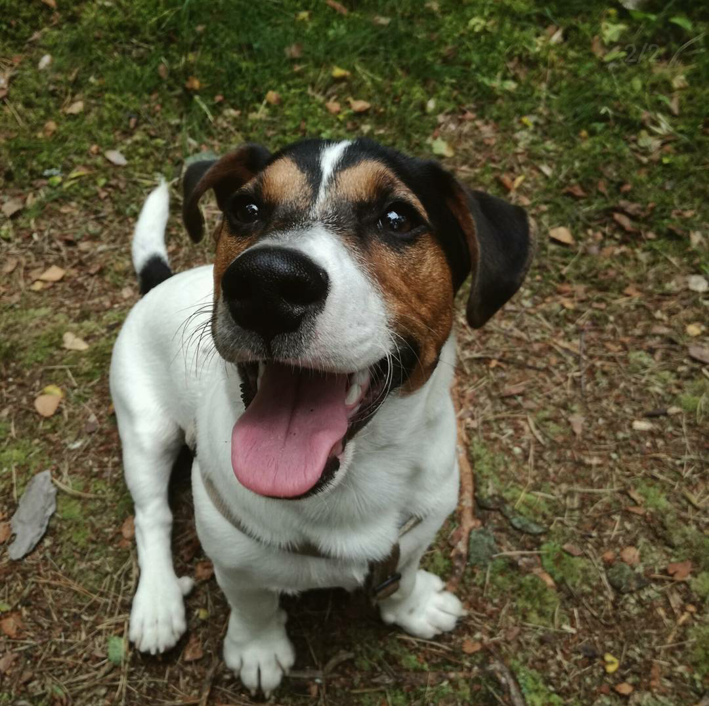
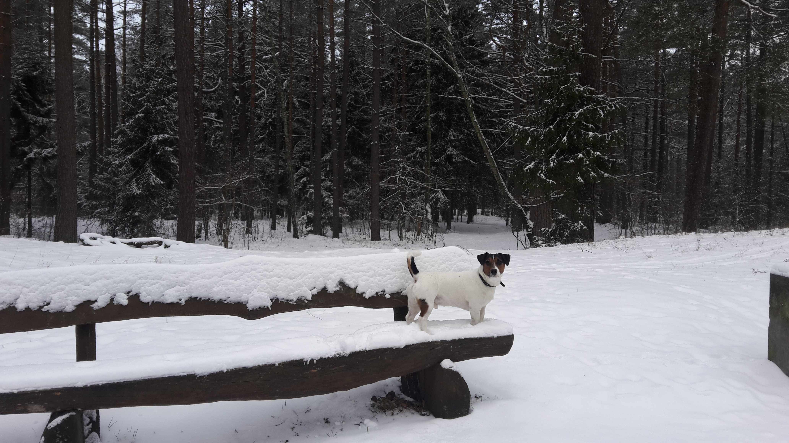

When it all started...

Have you ever made a wish in childhood to get a small and fluffy puppy? I think you have. The most of children want their parents to buy them a dog. As for me, I was no exception and as a child I was obsessed with the desire to be a happy owner of a dog. I dreamt about how I would play different games with him, how we would walk together, and I would always know that I have a reliable defender and an active friend. Unfortunately, my dad did not support this idea. He always said that this is a big responsibility, and children sometimes stop caring for a new friend a few weeks after a puppy appears in the family.

About my pet